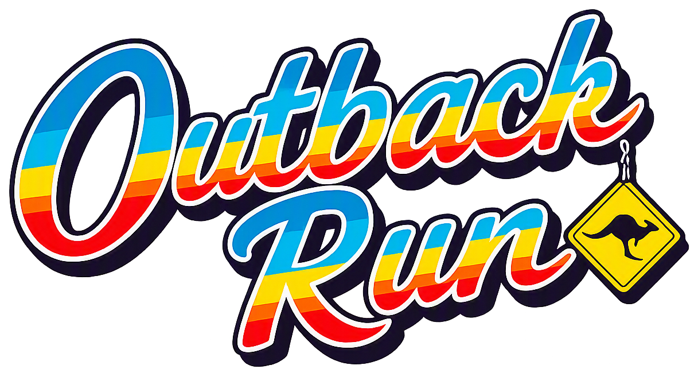
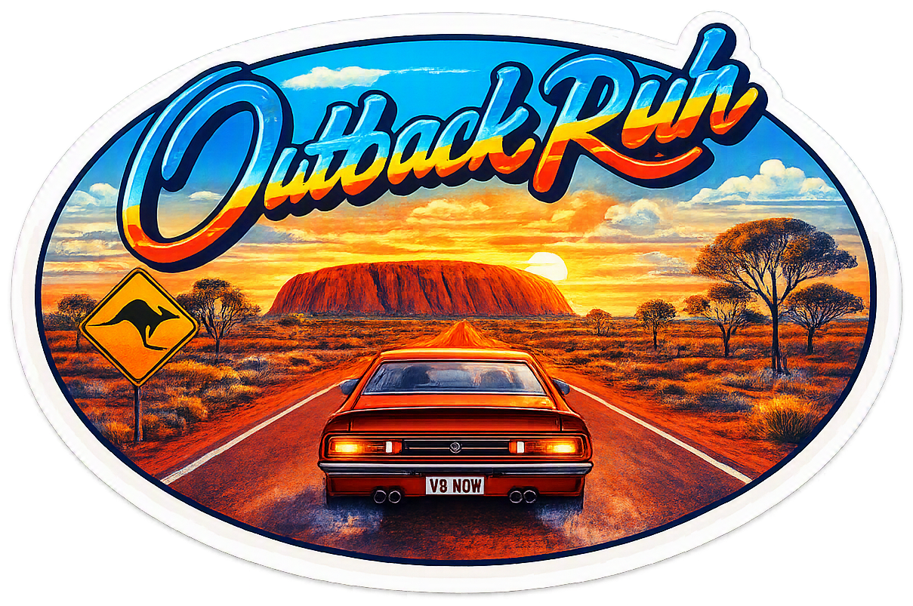
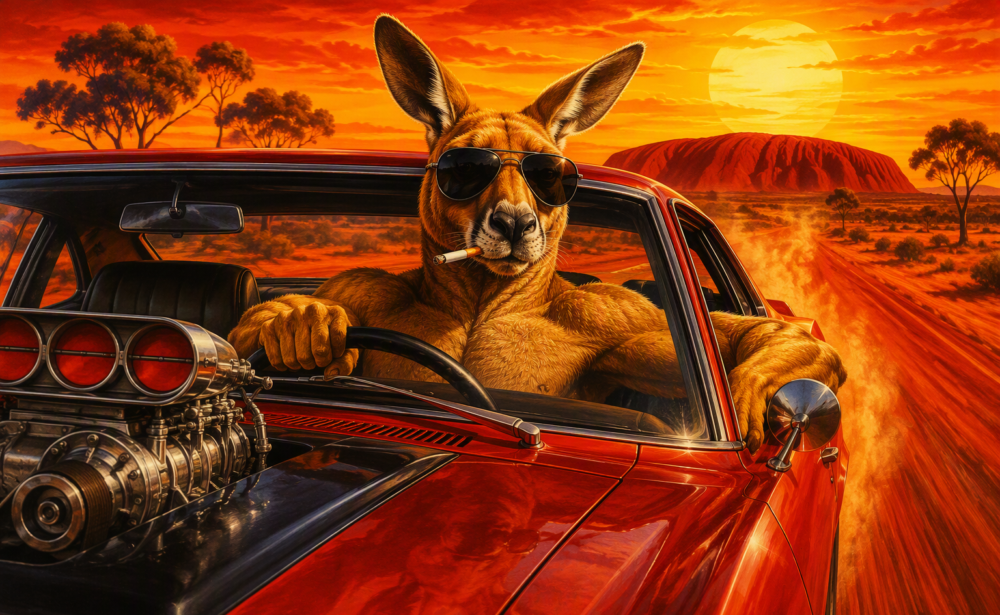
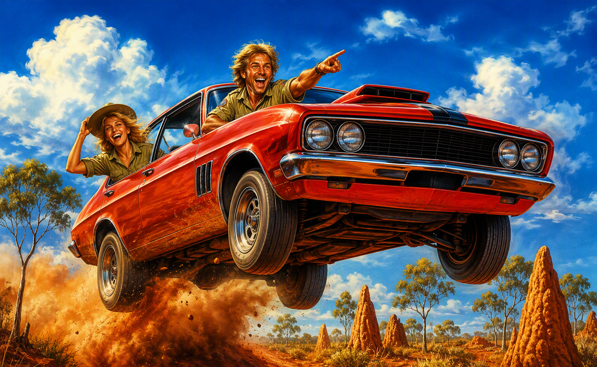
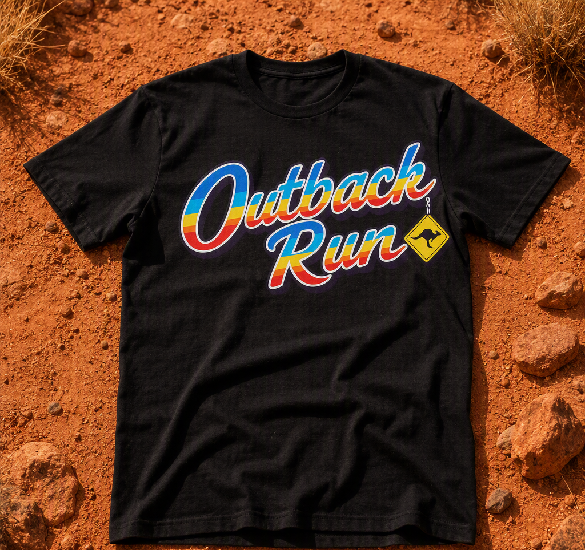
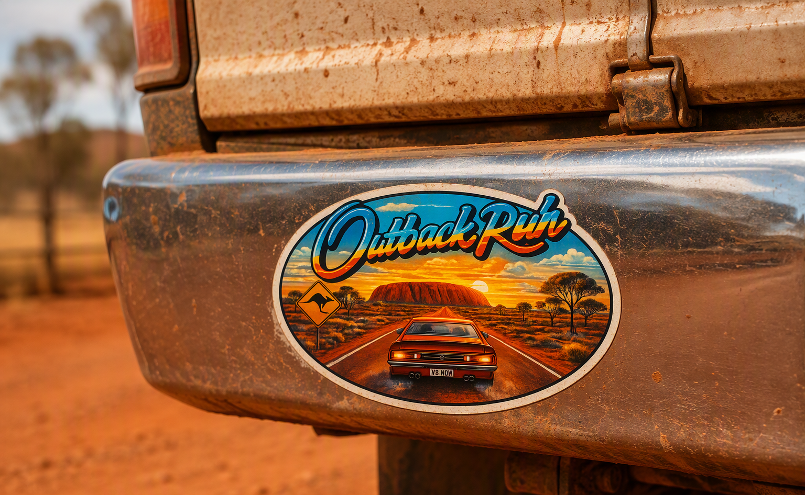
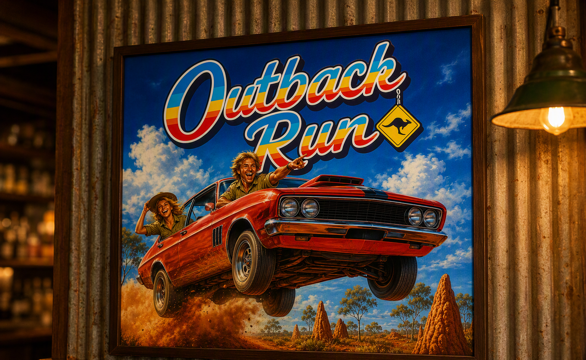
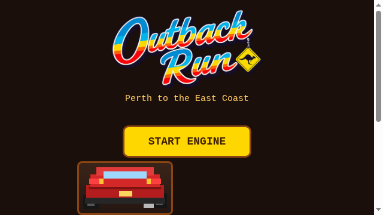

Outback Run is a love letter to two Australian icons at once: the 1980s Sega arcade racer — all sunset gradients, chrome lettering and impossible speed — and the laid-back outback larrikin who does 140 down the Nullarbor with one elbow out the window and not a care in the world.
The brand never takes itself seriously, but it always looks the goods. Everything is sun-baked, dust-covered and gold-trimmed. If a brand touchpoint wouldn't look right nailed to the wall of a corrugated-iron pub or slapped on the bumper of a dusty ute, it isn't Outback Run.
Laid-back. No stress, no hurry — even at 280 km/h. Relaxed confidence in every line and layout.
Larrikin. Cheeky, playful, a bit rough around the edges. The kangaroo wears sunnies. Of course he does.
Sun-baked retro. 1986 arcade warmth: sunset gradients, italic chrome type, big skies, red dirt.
The primary logo is the rainbow script wordmark: "Outback Run" hand-lettered in a bouncy 1980s brush script, filled with five horizontal stripes — blue, cyan, yellow, orange, red — wrapped in a thick white outline with a soft navy drop shadow falling down-right. The kangaroo road-sign diamond dangles off the final letter like a keychain: read the script first, the diamond second.

Clear space on all sides equals the cap height of the "O". Minimum width: 40 mm print / 200 px screen. Below that, use the kangaroo diamond alone (favicons, avatars, sticker dots). Stripe order is fixed — blue on top, red at the baseline — and stripes always run horizontal, never angled with the letters.
Every colour is sampled from the game itself — the sky at noon on the Nullarbor, the sunset bands behind the course map, the red centre dirt. Used together they read as "outback arcade" from three metres away.
| Swatch | Name | Hex | Role |
|---|---|---|---|
| Sunset Gold | #FFD700 | Logo highlight, HUD numbers, travelled route line, progress fill | |
| Sunset Ember | #FFE14D | Gradient top, sun discs, highlight text | |
| Burnt Orange | #FF9933 | Gradient middle, late-afternoon scenes, accents | |
| Ochre Red | #C23A2E | Gradient base, goal signage, crash text, "don't" rules | |
| Big Sky Blue | #1898E0 | Day skies, sticker backings, secondary merch panels | |
| Desert Sand | #D9C28F | Map boards, print backgrounds, apparel neutral | |
| Red Earth | #C17A4B | Red Centre dirt, dust trails, worn textures | |
| Saddle Brown | #8B4513 | UI frames, borders, leather, timber | |
| Night Black | #1A0F0A | Title screen ground, t-shirt base, type on sand | |
| Dusk Plum | #2A0820 | Sunset gradient top, night scenes |
Signature gradient (covers, posters): Dusk Plum → Ochre Red → Burnt Orange → Sunset Ember, top to bottom. The logo rainbow is a separate five-band spec: #2A9AD8 / #4FD8E8 / #FFE14D / #FF9933 / #E8302A, always horizontal, blue on top.
Flowing connected brush script with the five-band horizontal rainbow fill, white outline and navy shadow — the voice of the logo. Use the master wordmark wherever possible; for live text (stage banners, headings) use a bold retro script such as Yellowtail or Pacifico, leaning right, never in ALL CAPS.
Bold monospace with wide letterspacing, Sunset Gold on Night Black. Used for HUD counters, price/label text on merch, captions and spec callouts in print. Equivalent: any monospace at 700 weight, letter-spacing ≥ 0.1em.
Plain humanist sans (Helvetica/Arial) for paragraphs and spec sheets. Keep sentences short and dry — the humour does the work, not the font.
Two pieces of key art carry the brand's storytelling. Both are painted in warm 1980s airbrush style with saturated ochres and big skies, and both are trademark-clean for use on any product.


Note for ratings boards and family editions: an alternate take of Figure 1 without the cigarette is recommended for mass-market retail.
The identity is built to survive print: one wordmark, one diamond, one gradient. It reads on a chest, a bumper or a pub wall from across the car park.



The same identity runs through the game itself — the wordmark fronts the title screen, and the HUD, buttons and course map all draw from the palette in section 3.

Outback Run talks like a mate leaning on the bonnet: dry, warm, unhurried, and funny without trying.